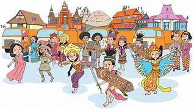
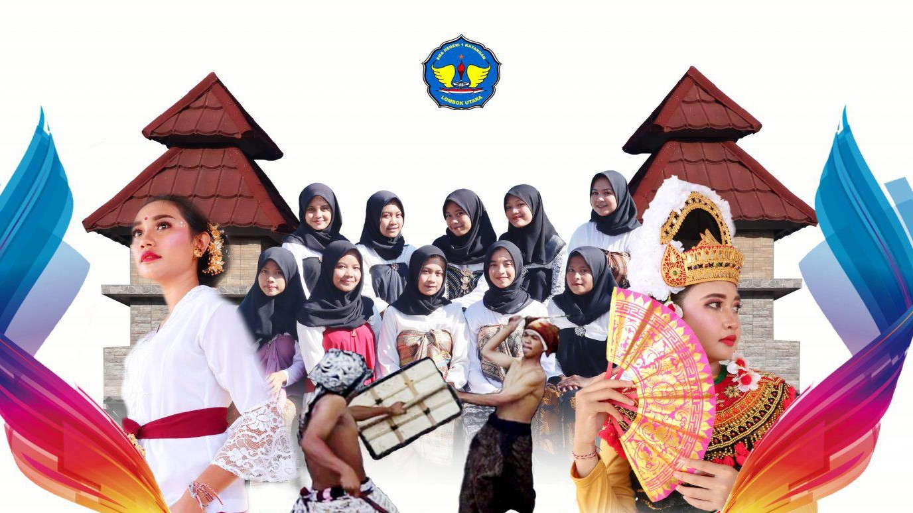
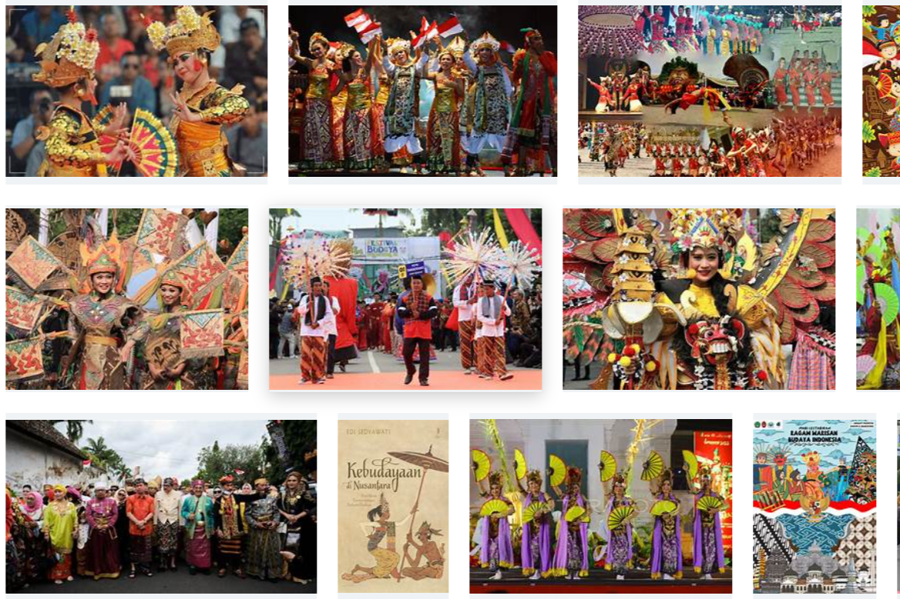

Budaya
Budaya adalah warisan berharga yang mencerminkan identitas bangsa. Di Indonesia, budaya memiliki makna yang sangat luas dan mencakup berbagai aspek kehidupan. Dari seni tari, musik tradisional, hingga adat istiadat yang diwariskan secara turun-temurun, semua elemen budaya ini membentuk karakter bangsa yang unik. Salah satu contoh budaya yang terkenal adalah batik, yang telah diakui oleh UNESCO sebagai Warisan Budaya Takbenda. Budaya tidak hanya menjadi kebanggaan, tetapi juga menjadi pengingat akan pentingnya menjaga keberagaman dalam persatuan.
Sabtu Budaya

Program Culture Saturday adalah program pendidikan berbasis budaya yang bertujuan untuk membangun rasa nasionalisme, menanamkan cinta pada tanah air, dan memupuk semangat solidaritas. (Kurniawansyah and Rodiatun, 2022). Kementerian Pendidikan dan Kebudayaan Nusa Tenggara Barat menggelar Program Budaya Sabtu di Nusa Tenggara Barat dengan tujuan memberikan ruang bagi sekolah, pemerintah daerah, distrik/kota, dan provinsi untuk menciptakan layanan pendidikan dan pembelajaran dengan memaksimalkan potensi dan peluang wilayah dalam mempromosikan budaya di Nus Tenggara Barat.
Keberagaman budaya adalah salah satu ciri khas yang ada di dunia, dengan berbagai suku bangsa yang tersebar di seluruh dunia, termasuk di Indonesia. Sebagai warga negara Indonesia, kita tidak bisa mengabaikan fakta bahwa negara Indonesia memiliki keragaman yang sangat besar, dari ras, suku bangsa, hingga bahasa. Keragaman ini telah melahirkan budaya Indonesia yang sangat kaya dan unik, seperti rumah adat, upacara adat, pakaian adat tradisional, tarian adat tradisional, alat musik dan lagu tradisional, senjata tradisional, dan berbagai makanan khas.